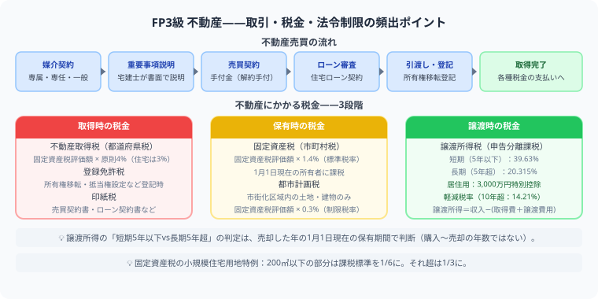

不動産は、取引・法令・税金が混ざる分野です。宅建ほど深くは出ませんが、用語が多いので、土地や建物を売る・買う・貸す場面に分けて整理しましょう。

不動産は「取引ルール」「法令制限（建ぺい率・容積率）」「税金3段階」に分けて整理するのが最も効率的です。譲渡所得の短期（5年以下）・長期（5年超）の判定は1月1日基準で行う点が頻出の引っかけです。
| テーマ | ポイント |
|---|---|
| 不動産取引 | 媒介契約、重要事項説明、手付金 |
| 法令上の制限 | 用途地域、建ぺい率、容積率 |
| 借地借家法 | 借地権、借家権、契約期間 |
| 不動産税制 | 固定資産税、不動産取得税、登録免許税、譲渡所得 |
FP3級で頻出の計算問題です。数値を代入する練習をしておきましょう。
多くの受験者が苦労するのは「法令上の制限（用途地域・建ぺい率・容積率）」と「不動産を取得・保有・売却するときの税金の種類」です。特に税金は「不動産取得税（取得時1回）」と「固定資産税（毎年）」を混同しやすいので、タイミングと税率をセットで整理しましょう。
①一般媒介契約は複数の不動産業者に依頼でき、報告義務なし。②専任媒介契約は1社のみで2週間に1回以上の業務報告義務あり。③専属専任媒介契約は1社のみで1週間に1回以上の報告義務があり、自己発見取引（売主自ら買主を見つける）も不可です。報告頻度の違いが試験に出ます。
FP3級では宅建ほど深い知識は不要です。借地権（土地を借りる権利）と借家権（建物を借りる権利）の基本的な契約期間と更新ルール、および「借りる側（借主）を保護する法律」という位置づけを理解していれば十分です。定期借地権と普通借地権の違いも押さえておきましょう。
譲渡所得＝譲渡収入金額−（取得費＋譲渡費用）です。所有期間が売却した年の1月1日時点で5年超なら「長期譲渡所得」（税率20.315%）、5年以下なら「短期譲渡所得」（税率39.63%）となります。マイホームの場合は3,000万円の特別控除が使えます。
お金の知識は、知っているだけで人生の選択肢が増えます。
この記事が少しでも参考になったら、この下にある【いいねボタン】をポチッと押してもらえると、めちゃくちゃ嬉しいです！ そして、Study Questで今日の学習時間を記録して、合格までの成長を「見える化」していきましょう。